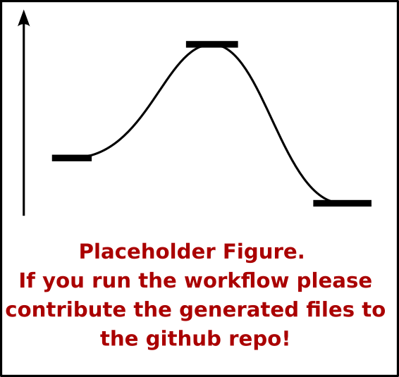

Example Workflow in ACME
1. Activating the conda environment
First we start by activating the DL_CPU conda environment. This environment is only on ACME and not in the local machines and it is shared between the groups.
conda activate DL_CPU
2. Using OpenBabel
We have previously created a .pdb file with gaussian for the pentene in the folder example_workflow in our home folder ( /home/username/ ). Our first step of the workflow will be to go to that folder and convert the .pdb file to a .xyz file that can be read by the xtb software.
cd example_workflow
obabel -ipdb pentene.pdb -oxyz -O*.xyz
Here the -ipdb specifies that the format of the input is pdb
3. Running an XTB calculation
We shouldn't directly run the xtb software because that will make the calculation not to run in one of the compute node but actually run in the node that controls the queue system and keeps everything connected.
As a consecuence our next step is to prepare the SLURM script to submit the
calculation to the queue system. Luckily we have available several scripts in
acme that automate that process. For setting up an xtb calculation we can use
xtbsetup.sh
xtbsetup.sh -i pentene.xyz -c 0 -s ch2cl2
We can also specify the number of processors as well as any extra command line options:
xtbsetup.sh -i pentene.xyz -c 0 -p 1 -a '--opt'
Note
Remember that we can always see how to use a command using either -h
or --help i.e. xtbsetup.sh -h
the output file will look like:
(Currently empty if someone runs the workflow it will be very appreciated
if they can provide the generated files to include them as examples)
Now we can proceed to submit the calculation to the queue system
sbatch ./job_xtb.sh
We can check the status of our calculation using the squeue command
which will return us something along the lines of:
#Currently empty it would be awesome if someone runs the workflow example and
#gives the generated files so that they can be included here.
4. Running a CREST calculation
Next, we will perform a conformational search using crest. To submit crest
calculations we have the crestsetup.sh script
crestsetup.sh -i xtbopt.xyz -c 0 -p 32
This will create the file job_crest.sh with the contents:
(Currently empty if someone runs the workflow it will be very appreciated
if they can provide the generated files to include them as examples)
Now we submit the calculation the same way that we did with the xtb job.
sbatch job_crest.sh
Note
One way that we can follow how the calculation is going is to see the end of the
log file. for crest calculations this file is crest.out and we can use
the tail -f crest.out command to display in the terminal the end of
the file. To go back to the usual console, use ctrl+c
5. Running a CENSO calculation
Now we are going to prepare a censo calculation. To do so we need to first create a .censorc file in our home directory.
cd ..
touch .censorc
Now we can use our favorite command-line editor to include all the parameters
that are required for this program to run. For a detailed explanation please go
to url. Here we include an example of its contents:
$CENSO global configuration file: .censorc
$VERSION:1.1.2
ORCA: /usr/local/ORCA501
ORCA version: 5.0.1
GFN-xTB: /opt/apps/xtb/bin/xtb
CREST: /opt/apps/xtb/crest
mpshift: /path/including/binary/mpshift-binary
escf: /opt/apps/BIOVIA/TURBOMOLE/bin/x86_64-unknown-linux-gnu/escf
#COSMO-RS
ctd = BP_TZVPD_FINE_19.ctd cdir = "/opt/apps/BIOVIA/COSMOthermX19/COSMOtherm/CTDATA-FILES" ldir = "/opt/apps/BIOVIA/COSMOthermX19/licensefiles"
$ENDPROGRAMS
$CRE SORTING SETTINGS:
$GENERAL SETTINGS:
nconf: all # ['all', 'number e.g. 10 up to all conformers']
charge: 0 # ['number e.g. 0']
unpaired: 0 # ['number e.g. 0']
solvent: gas # ['gas', 'acetone', 'acetonitrile', 'aniline', 'benzaldehyde', 'benzene', 'ccl4', '...']
prog_rrho: xtb # ['xtb']
temperature: 298.15 # ['temperature in K e.g. 298.15']
trange: [273.15, 378.15, 5] # ['temperature range [start, end, step]']
multitemp: on # ['on', 'off']
evaluate_rrho: on # ['on', 'off']
consider_sym: on # ['on', 'off']
bhess: on # ['on', 'off']
imagthr: automatic # ['automatic or e.g., -100 # in cm-1']
sthr: automatic # ['automatic or e.g., 50 # in cm-1']
scale: automatic # ['automatic or e.g., 1.0 ']
rmsdbias: off # ['on', 'off']
sm_rrho: alpb # ['alpb', 'gbsa']
progress: off # possibilities
check: on # ['on', 'off']
prog: tm # ['tm', 'orca']
func: r2scan-3c # ['b3-lyp', 'b3lyp', 'b3lyp-3c', 'b3lyp-d3', 'b3lyp-d3(0)', 'b3lyp-d4', 'b3lyp-nl', '...']
basis: automatic # ['automatic', 'def2-TZVP', 'def2-mSVP', 'def2-mSVP', 'def2-mSVP', 'def2-mSVP', '...']
maxthreads: 1 # ['number of threads e.g. 2']
omp: 1 # ['number cores per thread e.g. 4']
balance: on # possibilities
cosmorsparam: automatic # ['automatic', '12-fine', '12-normal', '13-fine', '13-normal', '14-fine', '...']
$PART0 - CHEAP-PRESCREENING - SETTINGS:
part0: on # ['on', 'off']
func0: b97-3c # ['b3-lyp', 'b3lyp', 'b3lyp-3c', 'b3lyp-d3', 'b3lyp-d3(0)', 'b3lyp-d4', '...']
basis0: automatic # ['automatic', 'def2-SV(P)', 'def2-TZVP', 'def2-mSVP', 'def2-mSVP', 'def2-mSVP', '...']
part0_gfnv: gfn2 # ['gfn1', 'gfn2', 'gfnff']
part0_threshold: 6.0 # ['number e.g. 4.0']
$PART1 - PRESCREENING - SETTINGS:
# func and basis is set under GENERAL SETTINGS
part1: on # ['on', 'off']
smgsolv1: cosmo # ['alpb_gsolv', 'cosmo', 'cosmors', 'cosmors-fine', 'cpcm', 'dcosmors', '...']
part1_gfnv: gfn2 # ['gfn1', 'gfn2', 'gfnff']
part1_threshold: 10.0 # ['number e.g. 5.0']
$PART2 - OPTIMIZATION - SETTINGS:
# func and basis is set under GENERAL SETTINGS
part2: on # ['on', 'off']
opt_limit: 2.5 # ['number e.g. 4.0']
sm2: cosmo # ['cosmo', 'cpcm', 'dcosmors', 'default', 'smd']
smgsolv2: cosmo # ['alpb_gsolv', 'cosmo', 'cosmors', 'cosmors-fine', 'cpcm', 'dcosmors', '...']
part2_gfnv: gfn2 # ['gfn1', 'gfn2', 'gfnff']
ancopt: on # ['on']
hlow: 0.01 # ['lowest force constant in ANC generation, e.g. 0.01']
opt_spearman: on # ['on', 'off']
part2_threshold: 99.99 # ['Boltzmann sum threshold in %. e.g. 95 (between 1 and 100)']
optlevel2: lax # ['crude', 'sloppy', 'loose', 'lax', 'normal', 'tight', 'vtight', 'extreme', '...']
optcycles: 8 # ['number e.g. 5 or 10']
spearmanthr: -4.0 # ['value between -1 and 1, if outside set automatically']
radsize: 10 # ['number e.g. 8 or 10']
crestcheck: on # ['on', 'off']
$PART3 - REFINEMENT - SETTINGS:
part3: off # ['on', 'off']
prog3: prog # ['tm', 'orca', 'prog']
func3: pbe0-d4 # ['b3-lyp', 'b3lyp', 'b3lyp-3c', 'b3lyp-d3', 'b3lyp-d3(0)', 'b3lyp-d4', 'b3lyp-nl', '...']
basis3: def2-SVP # ['DZ', 'QZV', 'QZVP', 'QZVPP', 'SV(P)', 'SVP', 'TZVP', 'TZVPP', 'aug-cc-pV5Z', '...']
smgsolv3: cosmors # ['alpb_gsolv', 'cosmo', 'cosmors', 'cosmors-fine', 'cpcm', 'dcosmors', '...']
part3_gfnv: gfn2 # ['gfn1', 'gfn2', 'gfnff']
part3_threshold: 99 # ['Boltzmann sum threshold in %. e.g. 95 (between 1 and 100)']
$NMR PROPERTY SETTINGS:
$PART4 SETTINGS:
part4: off # ['on', 'off']
couplings: on # ['on', 'off']
progJ: prog # ['tm', 'orca', 'adf', 'prog']
funcJ: pbe0 # ['b3-lyp', 'b3lyp', 'b3lyp-3c', 'b3lyp-d3', 'b3lyp-d3(0)', 'b3lyp-d4', 'b3lyp-nl', '...']
basisJ: def2-TZVP # ['DZ', 'QZV', 'QZVP', 'QZVPP', 'SV(P)', 'SVP', 'TZVP', 'TZVPP', 'aug-cc-pV5Z', '...']
sm4J: default # ['cosmo', 'cpcm', 'dcosmors', 'smd']
shieldings: on # ['on', 'off']
progS: prog # ['tm', 'orca', 'adf', 'prog']
funcS: pbe0 # ['b3-lyp', 'b3lyp', 'b3lyp-3c', 'b3lyp-d3', 'b3lyp-d3(0)', 'b3lyp-d4', 'b3lyp-nl', '...']
basisS: def2-TZVP # ['DZ', 'QZV', 'QZVP', 'QZVPP', 'SV(P)', 'SVP', 'TZVP', 'TZVPP', 'aug-cc-pV5Z', '...']
sm4S: default # ['cosmo', 'cpcm', 'dcosmors', 'smd']
reference_1H: TMS # ['TMS']
reference_13C: TMS # ['TMS']
reference_19F: CFCl3 # ['CFCl3']
reference_29Si: TMS # ['TMS']
reference_31P: TMP # ['TMP', 'PH3']
1H_active: on # ['on', 'off']
13C_active: on # ['on', 'off']
19F_active: off # ['on', 'off']
29Si_active: off # ['on', 'off']
31P_active: off # ['on', 'off']
resonance_frequency: 300.0 # ['MHz number of your experimental spectrometer setup']
$OPTICAL ROTATION PROPERTY SETTINGS:
$PART5 SETTINGS:
optical_rotation: off # ['on', 'off']
funcOR: pbe # ['functional for opt_rot e.g. pbe']
funcOR_SCF: r2scan-3c # ['functional for SCF in opt_rot e.g. r2scan-3c']
basisOR: def2-SVPD # ['basis set for opt_rot e.g. def2-SVPD']
frequency_optical_rot: [589.0] # ['list of freq in nm to evaluate opt rot at e.g. [589, 700]']
$END CENSORC
We are now ready to generate the submit script for our censo calculation using
censosetup.sh
cd example_workflow
censosetup.sh -i crest_conformers.xyz -c 0 -p 4 -o 8
This will create the file job_censo.sh with the contents:
(Currently empty if someone runs the workflow it will be very appreciated
if they can provide the generated files to include them as examples)
Now we submit the calculation to the queue system.
sbatch job_censo.sh
Note
We can follow the calculation status in the log file censo.out
6. Running QM calculations. Gaussian, ORCA, AQME and Goodvibes
After we have generated our conformers using semi-empirical and low cost DFT we
now proceed to refine them using the DFT method of our choice with Gaussian. To
do so we will use the in-house developed software aqme
python -m aqme --qprep --program gaussian --files enso_ensemble_part2.xyz --qm_input 'm062x def2svp opt freq=noraman' --mem 16GB --nproc 8
This will create a new folder named QCALC with our gaussian inputs.
cd QCALC
# this command will display the full contents of a file in our terminal
cat enso_ensemble_part2_conf_6.com
(Currently empty if someone runs the workflow it will be very appreciated
if they can provide the generated files to include them as examples)
Now to submit all the gausian calculations we have the gsub
gsub *.com -n 8 -q normal
Note
We will be able to follow each one of the calculations progress in their respective .log files.
We now will use another in-house developed software, goodvibes, to
check if we have any imaginary frequencies or duplicate geometries.
python -m goodvibes *.log --imag --dup
Finally we are going to run SP calculations using ORCA. We use aqme to
generate the input files (That have the extension .inp) and proceed to submit them
following the same exact process as with Gaussian calculations
python -m aqme --qprep --program orca --files '*.log' --qm_input 'wb97m-v def2-tzvp' --mem 2GB --nproc 8
cd QCALC/
gsub *.inp -n 8 -q normal
Warning
Be careful of how you write the basis set and functional as sometimes the
"spelling" changes across programs and will lead to error terminations. i.e.
def2tzvp is valid for Gaussian but for ORCA def2-tzvp is the
appropriate "spelling".
Now, we are going to obtain the thermochemistry of our calculations with the
single point corrections using goodvibes
First we will rename all ORCA calculations so that we can clearly remember that they are SP calculations. We can do it with a python script or in a python console:
from pathlib import Path
files = list(Path.cwd().glob('*.out'))
# we rename the input and the output files
for ofile in files:
ifile = ofile.parent/f'{ofile.stem}.inp'
ifile.rename(f'{ifile.stem}_sp.inp')
ofile.rename(f'{ofile.stem}_sp.out')
We can actually do this in a single line:
python -c "from pathlib import Path; files = list(Path.cwd().glob('*.out')); for ofile in files: ifile = ofile.parent/f'{ofile.stem}.inp'; ifile.rename(f'{ifile.stem}_sp.inp'); ofile.rename(f'{ofile.stem}_sp.out')"
We can do it using bash:
# It is recommended to run first the following line to ensure that the
# renaming is going to work as expected:
for item in *.out; do echo $item " -> " ${item%.*}_sp.out; done
# After checking that it will do the modifications that we want we proceed to
# rename the files:
for item in *.out; do mv -v $item ${item%.*}_sp.out; done
for item in *.inp; do mv -v $item ${item%.*}_sp.inp; done
Finally we move all the QM outputs calculations to the same folder and run
goodvibes
# We first rename all the calculations
# we first move all calculations to the same place
mv *.out ../
cd ..
python -m goodvibes *.log --imag --dup --spc sp
The final step of our example workflow is going to include the drawing of the
Potential Energy Surface (PES). To do so we need a file, pes.yaml with
the following contents:
--- # PES
Me: [CIS-Me, TRANS-Me]
Ph: [CIS-Ph, TRANS-Ph]
2ClPh: [CIS-2ClPh, TRANS-2ClPh]
tBu: [CIS-tBu, TRANS-tBu]
Cy: [CIS-Cy, TRANS-Cy]
Furan: [CIS-Furan, TRANS-Furan]
2MeThiofuran: [CIS-2MeThiofuran, TRANS-2MeThiofuran]
2Me: [CIS-2Me, TRANS-2Me]
4ClPh: [CIS-4ClPh, TRANS-4ClPh]
Ene: [CIS-Ene, TRANS-Ene]
Nap: [CIS-Nap, TRANS-Nap]
--- # SPECIES
CIS-Me: CIS_MeBoryl_*
TRANS-Me: TRANS_MeBoryl_*
CIS-Ph: CIS_PhBoryl_*
TRANS-Ph: TRANS_PhBoryl_*
CIS-2ClPh: CIS_Ph2ClBoryl_*
TRANS-2ClPh: TRANS_Ph2ClBoryl_*
CIS-tBu: CIS_tBuBoryl_*
TRANS-tBu: TRANS_tBuBoryl_*
CIS-Cy: CIS_CyBoryl_*
TRANS-Cy: TRANS_CyBoryl_*
CIS-Furan: CIS_FuranBoryl_*
TRANS-Furan: TRANS_FuranBoryl_*
CIS-2MeThiofuran: CIS_2MeThiofuranBoryl_*
TRANS-2MeThiofuran: TRANS_2MeThiofuranBoryl_*
CIS-2Me: CIS_Me2Boryl_*
TRANS-2Me: TRANS_Me2Boryl_*
CIS-4ClPh: CIS_4ClPh*
TRANS-4ClPh: TRANS_4ClPh*
CIS-Ene: CIS_Ene*
TRANS-Ene: TRANS_Ene*
CIS-Nap: CIS_Nap*
TRANS-Nap: TRANS_Nap*
--- # FORMAT
dec : 2
legend : False
color : black, #ab3737
pointlabel : False
gridlines: False
show_conformers: False
show_gconf: False
dpi : 400
title: BR
ylim : -15,30
And now we use goodvibes to draw the PES.
python -m goodvibes *.log --imag --dup --spc sp --pes pes.yaml
